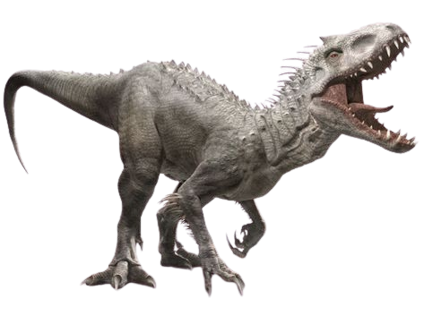
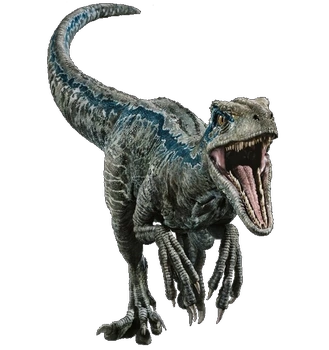

Tiranossauro-Rex
Conhecido como Rei dos Dinossauros, esta é a principal atração do setor Jurassic Park!

Indominus Rex
O híbrido geneticamente modificado do Jurassic World!

Velociraptor
O caçador mais inteligente de todo o parque!